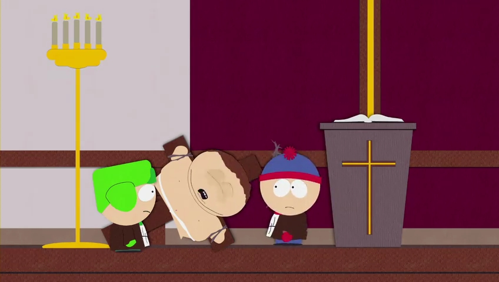
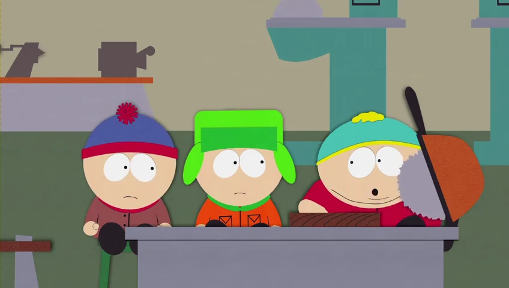
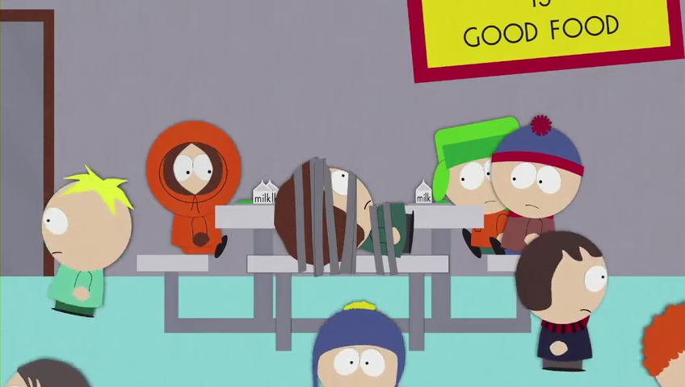
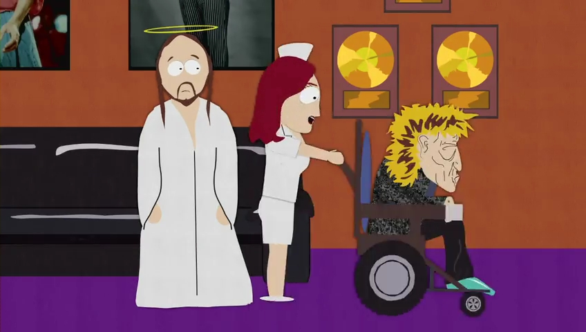

FYC://South Park s03 season 3 Complete 480p UNCENSORED WEBrip x264 mp4 NIT158
Descption:
IMDB
:
http://www.imdb.com/title/tt0121955/episodes?season=3
Video
:
[common for all episodes]
Format/Info : Advanced Video Codec (x264)
Format profile : Main@L3.1
Resolution : 848 x 480
Aspect ratio : 16:9
Frame rate mode : Constant
Frame rate : 23.976 fps
_________________________________________________________
Episode No./ Title .............................................. Duration ........ Bit rate
_________________________________________________________
s03e01 - Rainforest Shmainforest .................... 21mn 24s ...... 160 Kbps
s03e02 - Spontaneous Combustion ................. 21mn 28s ...... 160 Kbps
s03e03 - The Succubus .................................... 21mn 29s ...... 160 Kbps
s03e04 - Jakovasaurs ...................................... 21mn 22s .......160 Kbps
s03e05 - Tweek vs. Craig ................................. 21mn 23s ...... 160 Kbps
s03e06 - Sexual Harassment Panda ................ 21mn 23s ...... 160 Kbps
s03e07 - Cat Orgy ............................................ 21mn 22s ...... 160 Kbps
s03e08 - Two Guys Naked in a Hot Tub ............ 21mn 22s ...... 160 Kbps
s03e09 - Jewbilee ............................................. 21mn 22s ...... 160 Kbps
s03e10 - Korn's Groovy Pirate Ghost Mystery ... 21mn 22s ...... 160 Kbps
s03e11 - Chinpokomon ..................................... 21mn 22s ...... 160 Kbps
s03e12 - Hooked on Monkey Fonics .................. 21mn 22s ...... 160 Kbps
s03e13 - Starvin' Marvin in Space ...................... 21mn 50s ...... 160 Kbps
s03e14 - The Red Badge of Gayness ................. 21mn 22s ...... 160 Kbps
s03e15 - Mr. Hankey's Christmas Classics .......... 21mn 49s ..... 160 Kbps
s03e16 - Are You There God? It's Me, Jesus ....... 21mn 23s ..... 160 Kbps
s03e17 - World Wide Recorder Concert .............. 21mn 28s ..... 160 Kbps
__________________________________________________________
Audio
: [common for all ep.]
Format/Info : Advanced Audio Codec
Format profile : HE-AACv2 / HE-AAC / LC
Bit rate : 32.0 Kbps
Channel(s) : 2 channels / 1 channel / 1 channel
Channel positions : Front: L R / Front: C / Front: C
Sampling rate : 48.0 KHz / 48.0 KHz / 24.0 KHz
Language : English
Subtitles
:
Type : srt ( not hard coded .. can be disabled/turned off )
Language : English
Compatibility
:
iPad 1/2/3/4/mini, iPhone4/4S/5, iPOD touch 4/5, iPod nano 7, PS3, Xbox 360, WDTV, Amazon Kindle, all Tablets, other Android devices and of course PC
Screenshots
:




Check SAMPLE for quality and compatibility.
Notes:
There is no note for this torrent